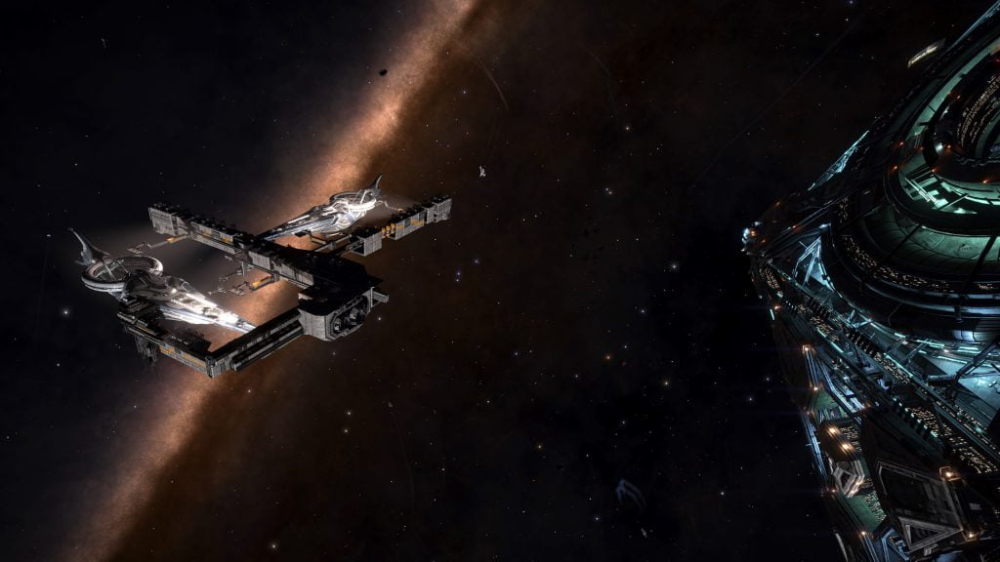

The Imperial Navy maintains a number of their vessels on permanent patrol stations, in addition to their active fleet that can be found in Conflict Zones.
Ship’s that do not carry an INV prefix are the personal ships of Senators and others of High Imperial Society.
These ships may occasionally be accompanied by additional Imperial Navy vessels who will open fire on you if you stray too close to them or the Capital Ship. When no additional vessels are around, the Capital Ship is safe to approach.
Note: since the Empire’s withdrawal from the Pleiades reported 12 OCT 3303, many of these assigned patrol stations have likely changed.
| Name | Patrol Location | Notes |
|---|---|---|
| INV Maximillian Wrekcht | Achenar 5 | |
| RZS Cerberus | Carthage – Cho | RZS prefix meaning is unknown |
| Aisling’s Hope | Carthage – New Carthage | Possibly Aisling Duval’s ship |
| INV Denton Patreus | Ch’eng 4 | |
| Imperial Freedom | Eotienses B 2 | Flagship of Senator Denton Patreus |
| INV Shield of Martyrs | Facece – Coates’s Mine | |
| Facece | INV Achenar’s Will | Arrives at Capital Ship Debris |
| INV Duval’s Judgement | Facece – New America | |
| INV Emperor’s Creed | Facece – Peter’s Wreck | |
| INV Maximillian Wrekcht | Facece – Topaz | |
| INV Trasken Duval I | Facece 8 | Arrives at Capital Ship Debris |
| INV Achenar’s Might | HR 1185 A 4 | |
| INV Shield of the Empire | HR 1475 A 2 | |
| Artemesia | LTT 9810 A 4 | Personal ship of Senator Torval |
| INV Replicator | Mundjiga A 1 | Named for appeal top CMDR Replicator_ |
| INV Dreadnought | Pleiades Sector AB-W b2-4 9 a (-26.3420, 97.7335) | Crashed Unknown Ship guard |
| INV Credo | Pleiades Sector IH-V c2-16 D 3 (3.3074, -70.9715) | Barnacle Guard |
| INV Duval’s Shield | Pleiades Sector IH-V c2-16 D 3 (30.1820, -54.4523) | Barnacle Guard |
| INV Emperor’s Creed | Pleiades Sector IH-V c2-16 D 3 (13.5981, -35.2571) | Barnacle Guard |
| INV Trasken Duval III | Pleiades Sector IH-V c2-16 D 4 | |
| INV Hall’s Memory | Pleione | |
| INV Duval’s Creed | Pleione 11 a (-6.2472, -173.9321) | Barnacle Guard |
| INV Emperor’s Trust | Pleione 11 a (2.3189, 177.2434) | Barnacle Guard |
| INV Rex | Pleione 11 a (0.8185, 176.5622) | Barnacle Guard |
| INV Achenar’s Might | Siksikas 4 | |
| Xanadu | Synteini A 2 | Personal ship of Senator Zemina Torval |
The Imperial Navy also maintains a number of Capital Ship Dock facilities that can be found adjacent to a small number of Imperial-controlled star ports.

These dock facilities have dual berths containing two Majestic-class Interdictors, both showing signs of battle damage, and undergoing repairs. The ships are never not broadcasting a transponder signal, and do not carry any identifying hull markings, so cannot be identified.
One or more Satellites can be found in the immediate area, giving Engineer Data when scanned.